HAIWEI XUE ∗
YANBO FAN ∗
, Tsinghua University, China , Nanjing University, China
XUAN WANG, Ant Group, China
ZHIYONG WU, Tsinghua University, China
![Fig. 1. Hierarchical semantic comprehension in conversations through large language models for enhanced implicit motion-dialog relationship learning. Previous methods for generating conversational behaviors in embodied agents primarily depend on end-to-end learning from weakly labeled audio-motion correspondences, which remain limited in semantic understanding. In addition, the lack of high-quality motion data makes it difficult for the model to learn complex conversational motions. Thus, we introduce a novel framework that employs large language models as a semantic processing unit to comprehensively analyze conversational dynamics. The framework processes both conversational audio and interlocutor motions, performing semantic understanding of contextual information, speaker intentions, and activation states. This fine-grained semantic analysis guides our motion generation model to produce more appropriate and naturally interactive behaviors relative to conventional approaches.](assets/0006-picture.png)
∗ Equal contribution. Corresponding author: Yanbo Fan.
Authors' Contact Information: Haiwei Xue, Tsinghua University, Beijing, China, WinniyGD@outlook.com; Yanbo Fan, Nanjing University, Suzhou, China, fanyanbo0124@gmail.com; Xuan Wang, Ant Group, Hangzhou, China, xwang.cv@gmail.com; Zhiyong Wu, Tsinghua University, Beijing, China, zywu@sz.tsinghua.edu.cn.
Permission to make digital or hard copies of all or part of this work for personal or classroom use is granted without fee provided that copies are not made or distributed for profit or commercial advantage and that copies bear this notice and the full citation on the first page. Copyrights for components of this work owned by others than the author(s) must be honored. Abstracting with credit is permitted. To copy otherwise, or republish, to post on servers or to redistribute to lists, requires prior specific permission and/or a fee. Request permissions from permissions@acm.org.
SA Conference Papers '25, Hong Kong, Hong Kong
© 2025 Copyright held by the owner/author(s). Publication rights licensed to ACM. ACM ISBN 979-8-4007-2137-3/25/12 https://doi.org/10.1145/3757377.3763998
Conversational behavior generation, being a crucial capability of embodied agents, is a significant factor influencing human-computer interaction. Generating high-quality conversational motions requires not only appropriate audio-motion mapping but also interactive responses to interlocutor behaviors and comprehensive understanding of conversational semantics. Existing methods primarily rely on audio signals and interlocutor motions for main agent motion generation, lacking high-level semantic understanding of the conversational content, leading to moderate quality motions that are not appropriate for the dialogue. To address these limitations, we leverage the powerful semantic understanding capabilities of large language models, to comprehend complex conversational contexts. Inspired by human conversation processes that conversational motions are highly related to both global and local semantic factors, including the conversational context, and the intentions, emotions, and passive or active states of the participants, we propose an agentic system named Echo that analyzes such information. To achieve comprehensive conversational understanding, Echo leverages multiple prompts and test-time recipes to guide large language models in decomposing conversational structures and extracting fine-grained semantic information. Furthermore, we design a hierarchical feature fusion network that systematically integrates from frame-level audio-motion features to sentence-level semantic understanding and finally to conversation-level contextual comprehension, organically combining fine-grained semantic features from large language models with audio and motion characteristics. Experimental results demonstrate that our framework can be effectively integrated with several state-of-the-art motion generation models to enhance their performance in generating high-quality conversational behaviors.
CCS Concepts: · Human-centered computing → Interaction techniques.
Additional Key Words and Phrases: Conversational behavior generation, Hierarchical semantic comprehension, LLMAgent
ACM Reference Format:
Haiwei Xue, Yanbo Fan, Xuan Wang, and Zhiyong Wu. 2025. Echo: Enhancing Conversational Behavior Generation via Hierarchical Semantic Comprehension with Large Language Models. In SIGGRAPH Asia 2025 Conference Papers (SA Conference Papers '25), December 15-18, 2025, Hong Kong, Hong Kong. ACM, New York, NY, USA, 9 pages. https://doi.org/10.1145/3757377.3763998
1 Introduction
Embodied agents' conversational behavior generation, which aims to synthesize appropriate motions and body movements during human-agent interactions, remains a fundamental challenge in human-computer interaction research [Aggarwal and Park 2004; Wang et al. 2021]. This task involves generating natural and contextually appropriate behaviors for a main agent in response to both the dialogue content and the interlocutor's motion data, typically from a human participant, playing a crucial role in creating more engaging and human-like embodied agents.
For human motion generation, most existing works [Alexanderson et al. 2023; Cheng et al. 2024; Zhang et al. 2024] have primarily concentrated on generating behaviors for single-person scenarios through end-to-end learning from weakly labeled audio-motion correspondences [Bian et al. 2024; Nyatsanga et al. 2023; Shashank et al. 2024]. While these advances are significant, they fall short of meeting the requirements for conversational intelligence, which demands the capability to generate appropriate behaviors in dynamic conversational contexts. This limitation highlights the urgent need for research into conversational behavior generation that can effectively handle the complexities of interactive dialogue scenarios. In response to this challenge, recent works [Chen et al. 2024; Xue et al. 2024b] have begun to explore motion generation in dyadic conversational settings, taking an important step toward more interactive and context-aware behavior generation. These approaches process two-person interactions within a local time window, typically 120-150 frames, where audio and text features from both participants and the interlocutor's motions are fused and fed into generative models. By leveraging and fusing multi-modal features, these methods attempt to learn implicit relationships between conversational elements and motion patterns.
However, these approaches face significant limitations in semantic understanding, which is crucial for conversational behaviors. First, the weak supervision from audio-motion pairs fails to capture the rich hierarchical semantic information in conversations. Second, these approaches primarily rely on local contextual information within small windows while lacking the ability to process the overall dialogue flow, limiting their understanding of long-term conversational context. A more systematic framework is required to understand and process the complicated conversational semantics.
Our motivation is inspired by the human conversational process involved in comprehending conversations, including understanding semantic context, perceiving emotional states, reasoning about intentions, and executing interactive motions. When encountering a conversation, humans analyze dialogues through multiple cognitive processes [Stein and Thiel 1993; Turnbull 2003]. For instance, when hearing "I love interactive design because it's where technology and art converge", we can summarize that the conversation is about interactive design-related topics, while understanding the speaker's intention to express affection. In another example: "Yeah, people from all over the world are sharing their interesting stories in a friendly and happy way on TikTok and YouTube." We can summarize the discussion about social media transitions, while detecting the speakers' intention of sharing news and expressing opinions. These examples show how topics and intentions naturally emerge and vary across different conversations. Furthermore, in conversations, participants often dynamically shift between leading and following roles, creating varying degrees of active and passive engagement. This conversation process inspires us to consider: how can we construct an intelligent conversational semantic understanding system to assist in conversational behavior generation? Constructing such a system is quite challenging because each of the above-mentioned semantic understandings requires significant capabilities.
In this paper, we propose Echo, a novel framework that leverages large language models as a semantic processing unit to comprehensively analyze conversational semantics and hierarchically incorporates semantic information into the generation process, as shown in Fig. 1. The advanced pre-trained large language models inherently contain foundational knowledge about human interactions and behaviors, providing a feasible knowledge base for building an intelligent system that emulates conversation understanding and behavior generation. Nevertheless, customizing the generalized pre-trained LLMs for the specific conversational semantic understanding is very challenging due to the black-box nature of large models and the inherent randomness of LLM output.
To address these, we first analyze different types of semantics that are highly relevant to conversational behaviors, including global topic and intentions and sentence-level local intentions, activation states, and motion probability. Then, we construct the fine-grained semantic understanding step-by-step by designing specific prompts that take into account the characteristics of each semantic type. We also incorporate LLM reviewers and rule-based checkers to ensure the accuracy and robustness of these semantic analysis results, which is further validated by favorable user study outcomes. As for the hierarchical semantic processing, we propose a cascaded feature fusion network that progressively integrates the semantic information across different levels. The network first processes frame-level features (e.g., audio signals, interlocutor motions) to capture basic behavioral patterns. Then, it fuses frame-level features with sentence-level semantic information to establish contextual understanding. Finally, it combines conversation-level global topic and intention information to ensure global coherence.
We demonstrate that Echo can be seamlessly integrated with various state-of-the-art motion generation architectures, demonstrating its strong generalizability. We conduct comprehensive experiments and ablations with three different base models and prove its effectiveness. To summarize, our main contributions are as follows:
· We propose a novel framework that leverages LLMs to perform systematic semantic analysis of conversations.
· We design a blending network that effectively integrates multi-level semantic features from different processing stages to guide motion generation.
· Our framework can be seamlessly integrated with existing motion generation models, consistently improving the visual quality of generated conversational behaviors.
2 RelatedWork
2.1 Conversational Behavior Generation
Non-verbal communication, particularly conversational behaviors, also known as conversational co-speech gestures, plays a crucial role in human interactions [Mehta et al. 2023; Saund and Marsella 2021; Wagner et al. 2014; Zhang et al. 2024]. In dyadic conversations, these gestures synchronize with speech and implicitly convey intentions, serving to signal turn-taking and enhance mutual understanding [Hostetter 2011; Kendon 2004]. Thus, generating such contextually appropriate gestures requires profound understanding of both dialogue structures and semantic nuances [Ghaleb et al. 2024; Zhi et al. 2023]. Most existing gesture generation research has focused on single-speaker scenarios [Ginosar et al. 2019; Yoon et al. 2020]. For instance, Rhythmic Gesticulator [Ao et al. 2022] employs a rhythm-based segmentation pipeline-identifying audio onsets to split speech into normalized blocks-to ensure temporal coherence between speech and gestures. Recently, the field is now beginning to explore conversational contexts. Although datasets like [Lee et al. 2019] have provided initial support for this direction, conversational gesture generation remains largely unexplored.
Moreover, current methods primarily rely on low-level features such as speech rhythm and isolated keywords [Ao et al. 2023; Deichler et al. 2023; Fu et al. 2024; Guichoux et al. 2024; Mughal et al. 2024; Ng et al. 2024], overlooking the rich dynamics of interpersonal interactions. Our research addresses these limitations by leveraging LLMs to perform fine-grained analysis of conversational structures and human behaviors. Through carefully designed prompts that incorporate psychological and sociological insights, we enhance the model's ability to understand and generate appropriate gestures in conversational contexts.
2.2 LLMAgents and Prompt Optimization
Large Language Models have revolutionized artificial intelligence through their remarkable capabilities in natural language understanding and generation [Brown et al. 2020; Devlin 2018; OpenAI 2023]. Their extensive knowledge and flexible reasoning abilities have opened new possibilities for agent development [Franklin and Graesser 1997; OpenAI 2023], particularly in decision-making tasks where agents process observations and generate actions through natural language [Ahn et al. 2022; Wei et al. 2022]. Techniques such as chain-of-thought prompting [Wei et al. 2022] and few-shot learning [Brown et al. 2020] have significantly enhanced their reasoning capabilities, Building upon these advances, our work develops specialized prompting strategies and carefully designed information encoding-fusion modules, enabling LLMs to effectively analyze conversational dynamics and predict appropriate behavioral responses. This contribution bridges the gap [Xue et al. 2024a] between language understanding and interaction behavior generation, making the fusion of large language models and generative models a new paradigm.
2.3 LLMs for Behavior Understanding
Researchers are increasingly leveraging the powerful LLM for human behavior understanding and generation [Hensel et al. 2023; Windle et al. 2024; Zeng et al. 2024]. The work of Zhang et al. [2024] introduced Semantic Gesticulator, which combines LLM-based retrieval and a GPT generator for generating gestures closely matching speech semantics. The work of Torshizi et al. [2025] developed a gesture selection approach that suggests meaningful, appropriate co-speech gestures, based on the semantic capabilities of LLM. Different from these works, which utlizes LLM for gesture selection or focus on single-speaker generation, we aim to build a comprehensive semantic understanding for conversation based on LLM and intergate them hierarchically in an end-to-end manner.
3 Methodology
3.1 Overview
We propose Echo, a novel framework that enhances conversational behavior generation through hierarchical semantic comprehension. The key innovation of Echo lies in its use of large language models for deep semantic understanding, combined with a hierarchical information encoding mechanism that progressively integrates multimodal features. As illustrated in Fig. 2, our framework consists of
ALGORITHM 1: Step-by-Step Semantic Understanding with LLMs

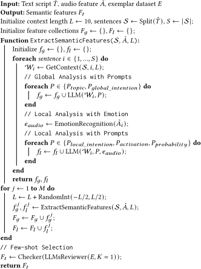
![Fig. 2. Overview of Echo, an enhancer for advancing conversational behavior generation. Our framework consists of three main phases: (1) LLM Forward Phase, where conversation scripts are processed through carefully designed prompts to extract semantic features, with an incorporated review mechanism ensuring the quality and consistency of extracted information; (2) Hierarchical Information Encoding Phase, which integrates frame-level, sentence-level, and conversation-level features through cascaded fusion networks; and (3) Integration Phase, where the fine-grained features as conditions are used to generative models for producing more high-quality main agent motion sequences.](assets/0042-picture.png)
three main phases: LLM chain-of-thought processing for semantic extraction, hierarchical information encoding for progressive feature integration, and final integration for motion generation. The input text script ˆ 𝑇 is first processed to obtain semantic features at different levels, while the audio features ˆ 𝐴, interlocutor motion ˆ 𝐼 , and speaker ID ˆ 𝑆 are progressively integrated through our hierarchical encoding mechanism. The hierarchical feature representation ˆ 𝐶 enables the framework to capture both low-level behavioral patterns and high-level conversational context, while seamlessly enhancing various motion generation models.
3.2 Fine-grained Semantic Understanding
We advocate exploring the powerful capabilities of large language models to realize fine-grained semantic understanding. We first split the input text ˆ 𝑇 into a set of sentences S. For each sentence 𝑖, we extract its context W𝑖 containing 𝐿 surrounding sentences. The semantic features are extracted through specifically designed prompts, including global-level prompts (𝑃𝑡𝑜𝑝𝑖𝑐 , 𝑃𝑔𝑙𝑜𝑏𝑎𝑙_𝑖𝑛𝑡𝑒𝑛𝑡𝑖𝑜𝑛) and local-level prompts (𝑃𝑙𝑜𝑐𝑎𝑙_𝑖𝑛𝑡𝑒𝑛𝑡𝑖𝑜𝑛, 𝑃𝑎𝑐𝑡𝑖𝑣𝑎𝑡𝑖𝑜𝑛, 𝑃𝑝𝑟𝑜𝑏𝑎𝑏𝑖𝑙𝑖𝑡𝑦). The complete semantic understanding process is detailed in Algorithm 1.
Specifically, Step1-Global Topic Encoding captures the overall context by condensing the conversation into a concise description, producing a high-level representation of the dialogue's main theme. Step2-Global Motivation Reasoning analyzes the speaker's overarching communicative goals, extracting high-level behavioral intentions that guide the overall motion patterns. For sentence-level understanding, Step3-Local Semantic Refinement extracts the local semantics at the sentence level. We consider 1) the specific purpose or goal of each sentence. We use different types of local intentions

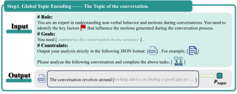
Fig. 3. The step-by-step prompt design. Each step is designed with specific roles, goals, and constraints to guide LLMs in extracting different aspects of conversational information. The symbols used in the figure represent: conversation participants, JSON format specification, and example reference. The examples mainly include 2-3 demonstration cases, for instance, for a local intention, the example can be "How have you been recently?" , local intention: greeting. See the appendix for full prompts.

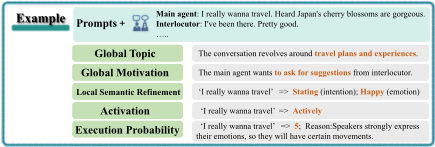
(including greeting, questioning, stating, negotiating, interrupting, commanding, suggesting, confirming, disagreeing, apologizing, thanking, hesitating, agreeing, switching topic, expressing emotion), with a default value None indicating the absence of a clear intention. The LLM is required to output one of the intentions; 2) We simultaneously obtain audio emotional cues using a pretrained emotion recognition model [Ma et al. 2024]. These audio-derived emotional labels are incorporated to enrich the semantic understanding, enabling a more nuanced interpretation of local semantics that accounts for both textual content and emotional prosody. To capture interaction dynamics, Step4-Active Associative Reflection assesses the speaker's engagement level, determining whether they are actively participating or passively responding in the conversation. This information helps modulate motion intensity and expressiveness. Finally, Step5-Motion Execution Probability evaluates the likelihood of motion occurring at each moment, helping to determine when and how strongly to trigger the motions. It outputs both detailed ratings and explanations. For each of the prompts, we also design some similar alternatives to enhance the diversity and robustness. The details are presented in the supplementary materials. Fig. 3 presents an example format of the prompt, and Fig. 4 provides an example of the extracted fine-grained semantic information.
Further, to ensure robust semantic extraction, we randomly vary the context window size within a range of ±𝐿/2 frames around the base window size. This stochastic adjustment allows us to capture diverse contextual relationships while maintaining detailed local understanding. The process repeats 𝑀 times, with each iteration potentially uncovering different semantic nuances through different context spans. We then leverage an exemplar database 𝐸 containing some manually curated high-quality conversation analyses to enhance our semantic understanding through few-shot learning. Specifically, the LLM reviewer is first given the exemplar dataset 𝐸 and then asked to select the most relevant example to the sentence S𝑖 from the 𝑀 candidates. This mechanism benefits the consistent and high-quality semantic feature extraction. Furthermore, we implement a rule-based checker module that monitors the format of LLM responses. When encountering malformed outputs or incomplete responses, the checker module automatically requests the LLM to regenerate answers until valid results are obtained. These mechanisms ensure the robustness and reliability of our semantic feature extraction process.
3.3 Hierarchical Information Processing
Effective conversational behavior generation requires understanding at multiple temporal scales, from instantaneous movements to overall conversation flow. We address this challenge through a hierarchical information encoding network that progressively integrates features from frame-level details to conversation-level patterns.
As shown in Fig. 2, our encoding process follows a bottom-up hierarchy with three distinct levels. At the frame level, we combine instantaneous audio features ˆ 𝐴 with corresponding interlocutor motion ˆ 𝐼 , text script ˆ 𝑇 , and speaker ID ˆ 𝑆 to capture fine-grained motion dynamics:

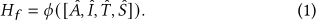
At the sentence level, we integrate these frame-level features 𝐻𝑓 with sentence-level semantic features 𝐹𝑙 , which include sentencelevel intentions and emotions, activation states, and motion probabilities. These sentence-level semantics are represented by one-hot vectors and encoded by MLPs. This integration helps establish coherent behavioral patterns within each utterance:

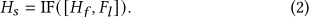
Finally, at the conversation level, we incorporate global semantic features 𝐹𝑔 to ensure behavioral consistency throughout the entire dialogue, which encodes both global topic and intentions:

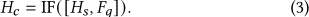
The Information Fusion (IF) block, which combines MLP and crossattention mechanisms, enables effective feature integration at each level. This progressive encoding ensures that both local temporal dynamics and global semantic understanding guide the generation of conversational behaviors, resulting in more natural and contextually appropriate motion sequences. The final fine-grained feature ˆ 𝐶 is formed as:

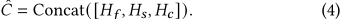
The fine-grained features ˆ 𝐶 is then sent to the generative model to synthesize the motions.
3.4 Integration and Implementation
Echo can be easily integrated with the mainstream motion generation models as a semantic information enhancement module. Let's take DSG+ [Yang et al. 2023] as an example. It can be done by first realizing the 𝜙 in Eq. (1) with the specific frame-level information encoding module of DSG+, then incorporating the hierarchical semantic processing of Echo to obtain ˆ 𝐶. ˆ 𝐶 is then sent to the generation module of DSG+ for motion generation. We train the modified model in an end-to-end manner, including both the framelevel encoding, the Echo processing and the generation modules. This simple and straightforward integration approach demonstrates remarkable effectiveness across different architectures, showing that our semantic features are complementary to existing condition spaces.
4 Experiments
4.1 Experimental Settings
4.1.1 Dataset: Our experiments utilize a comprehensive dyadic interaction dataset containing approximately 20 hours [Kucherenko et al. 2023; Lee et al. 2019; Yoon et al. 2022] of non-verbal communication recordings. The dataset comprises 785 natural conversations, with audio recordings, transcribed dialogues, and motion capture data in BVH format for both participants. The conversations cover diverse daily interaction scenarios, with precise millisecond-level temporal alignment between speech and motion data.

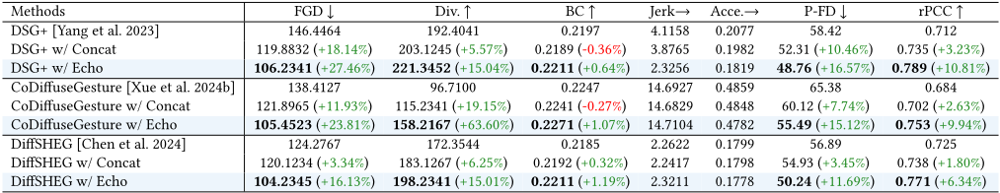
Recognized table text (check against the image)
| Methods | FGD ↓ | Div. ↑ | BC ↑ | Jerk→ | Acce.→ | P-FD ↓ | rPCC ↑ |
|---|---|---|---|---|---|---|---|
| DSG+ [Yang et al. 2023] | 146.4464 | 192.4041 | 0.2197 | 4.1158 | 0.2077 | 58.42 | 0.712 |
| DSG+ w/ Concat | 119.8832 (+18.14%) | 203.1245 (+5.57%) | 0.2189 (-0.36%) | 3.8765 | 0.1982 | 52.31 (+10.46%) | 0.735 (+3.23%) |
| DSG+ w/ Echo | 106.2341 (+27.46%) | 221.3452 (+15.04%) | 0.2211 (+0.64%) | 2.3256 | 0.1819 | 48.76 (+16.57%) | 0.789 (+10.81%) |
| CoDiffuseGesture [Xue et al. 2024b] | 138.4127 | 96.7100 | 0.2247 | 14.6927 | 0.4859 | 65.38 | 0.684 |
| CoDiffuseGesture w/ Concat | 121.8965 (+11.93%) | 115.2341 (+19.15%) | 0.2241 (-0.27%) | 14.6829 | 0.4848 | 60.12 (+7.74%) | 0.702 (+2.63%) |
| CoDiffuseGesture w/ Echo | 105.4523 (+23.81%) | 158.2167 (+63.60%) | 0.2271 (+1.07%) | 14.7104 | 0.4782 | 55.49 (+15.12%) | 0.753 (+9.94%) |
| DiffSHEG [Chen et al. 2024] | 124.2767 | 172.3544 | 0.2185 | 2.2622 | 0.1799 | 56.89 | 0.725 |
| DiffSHEG w/ Concat | 120.1234 (+3.34%) | 183.1267 (+6.25%) | 0.2192 (+0.32%) | 2.2417 | 0.1798 | 54.93 (+3.45%) | 0.738 (+1.80%) |
| DiffSHEG w/ Echo | 104.2345 (+16.13%) | 198.2341 (+15.01%) | 0.2211 (+1.19%) | 2.3211 | 0.1778 | 50.24 (+11.69%) | 0.771 (+6.34%) |
4.1.2 Baselines: We use two SOTA dyadic gesture generation models DSG+ [Yang et al. 2023] and CoDiffuseGesture [Xue et al. 2024b], and one SOTA single-person gesture generation model DiffSHEG [Chen et al. 2024]. We modify DiffSHEG by concatenating its input from both the main agent and interlocutor to enable dyadic tasks. These models have shown strong performance in recent research. For each baseline, we follow their original experimental settings while adding our Echo framework to enhance their capabilities. The detailed experimental settings are provided in the supplementary materials.
4.1.3 Semantic feature extraction: For semantic feature extraction, we employ a sliding context window of length 𝐿 = 10 sentences for conversation analysis. The process is iteratively refined 𝑀 = 3 times. The LLMs reviewer selects the highest quality result (𝐾 = 1) from these iterations to ensure optimal semantic understanding. To process the conversations, we use two different language models: gpt-4o-mini-0718 for short dialogues (less than 5 minutes) and o1preview-0912 for longer conversations. In our experiments, the total cost for LLM services amounts to $350, with each inference costing $0.003. All LLM text processing was completed by April 15, 2025.
4.1.4 Evaluationmetrics: We evaluate our Echo framework through both objective metrics and subjective assessments. The objective metrics include Fréchet Gesture Distance (FGD) [Yoon et al. 2020] for evaluating motion quality, Diversity (Div.) for measuring motion variation, and Behavioral Coherence (BC) [Tseng et al. 2023] for assessing natural transitions. We also employ Jerk [Kucherenko et al. 2019] and Acceleration metrics to evaluate motion smoothness and dynamics. For dual-speaker synchronization evaluation, Paired Fréchet Distance (P-FD) extends FD to measure the synchronization consistency between dual speakers, and the Residual Pearson Correlation Coefficient (rPCC) assesses motion synchronization by calculating the correlation between the generated main agent's motions and the real interactor's motions under different conditions.
4.2 Qualitative Results
Our experimental results demonstrate significant improvements across all baseline models, in terms of both motion quality, motion diversity, and dual-speaker synchronization. As shown in Table 1, the integration of Echo with DSG+ yields substantial improvements in motion quality, evidenced by a reduction in FGD from 146.4464 to 106.2341. The framework also enhances motion diversity, as indicated by the Div. score increasing from 192.4041 to 221.3452. Similar improvements are observed with CoDiffuseGesture, where Echo significantly reduces FGD from 138.4127 to 105.4523 while dramatically improving Div. from 96.7100 to 158.2167. For DiffSHEG, augmenting with our framework achieves a notable reduction in FGD from 124.2767 to 104.2345 and an increase in Div. from 172.3544 to 198.2341, further validating the effectiveness of our approach across different baselines. Echo also significantly improves the dualspeaker synchronization performance measured by P-FD and rPCC. These quantitative improvements are visually evident in Fig. 5, where we observe that baseline models fail to generate appropriate reaction movements during conversations (displayed by gray boxes). In contrast, when enhanced with Echo, all models demonstrate more natural and contextually appropriate gestures (shown by orange boxes). These qualitative observations align well with our quantitative metrics, confirming Echo's effectiveness in enhancing the naturalness and interactivity of conversational behaviors across different baseline models. Besides, we also evaluate the performance of "+w/ Concat", which simply concatenates all semantic features into the baseline. The comparison between "+w/ Concat" and "+w/ Echo" demonstrates the necessity and effectiveness of the proposed hierarchical semantic information encoding.
4.2.1 User Study. . We recruited 30 participants aged 20-35 to evaluate the consistency of results across 60 videos. To ensure unbiased assessment, all video sources are anonymized during the evaluation process. We follow existing works to conduct evaluation. Participants rate three key aspects on a 5-point MOS scale from 1 (worst) to 5 (best): human-likeness, appropriateness for agent speech, and appropriateness for interlocutor. The results presented in Table 2 provide strong validation of Echo's effectiveness in real-world scenarios. DiffSHEG [Chen et al. 2024] enhanced by Echo achieves superior performance in human-likeness with a mean opinion score of 3.8903. Notably, all baseline models demonstrate consistent improvements across all subjective metrics when integrated with our framework, indicating its robust generalization capability.

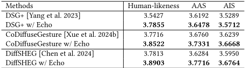
Recognized table text (check against the image)
| Methods | Human-likeness | AAS | AIS |
|---|---|---|---|
| DSG+ [Yang et al. 2023] | 3.5427 | 3.6192 | 3.5289 |
| DSG+ w/ Echo | 3.7855 | 3.6478 | 3.5712 |
| CoDiffuseGesture [Xue et al. 2024b] | 3.7716 | 3.6760 | 3.6239 |
| CoDiffuseGesture w/ Echo | 3.8522 | 3.7331 | 3.6668 |
| DiffSHEG [Chen et al. 2024] | 3.7813 | 3.6284 | 3.5950 |
| DiffSHEG w/ Echo | 3.8903 | 3.7716 | 3.6764 |

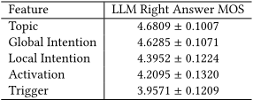
Recognized table text (check against the image)
| Feature | LLM Right Answer MOS |
|---|---|
| Topic | 4.6809 ± 0.1007 |
| Global Intention | 4.6285 ± 0.1071 |
| Local Intention | 4.3952 ± 0.1224 |
| Activation | 4.2095 ± 0.1320 |
| Trigger | 3.9571 ± 0.1209 |
![Fig. 5. Comparison of conversation behavior generation across different models with and without Echo enhancement. The gray box represents the baseline, while the orange box is enhanced with Echo. Our observations reveal that when audio is input, the generative models can produce more fitting conversational gestures by Echo enhancement. Take DiffSHEG [Chen et al. 2024] as an example. When the phrase " you know " is uttered, it doesn 't showmeaningful gestures. But after enhancement with Echo, it makes a positive response gesture, like pointing at the other person. The Echo enhancement effectively elicits gestures in appropriate conversational contexts, leading to more natural interactions. Moreover, CoDiffuseGesture [Xue et al. 2024b] and DSG+ [Yang et al. 2023] can also perform some motions. Especially after Echo enhancement, the motions they make are more adapted to the context of the conversation.](assets/0083-picture.png)

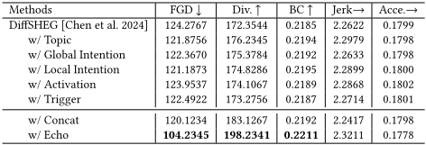
Recognized table text (check against the image)
| Methods | FGD ↓ | Div. ↑ | BC ↑ | Jerk→ | Acce.→ |
|---|---|---|---|---|---|
| DiffSHEG [Chen et al. 2024] | 124.2767 | 172.3544 | 0.2185 | 2.2622 | 0.1799 |
| w/ Topic | 121.8756 | 176.2345 | 0.2194 | 2.2979 | 0.1798 |
| w/ Global Intention | 122.3670 | 175.3784 | 0.2192 | 2.2633 | 0.1798 |
| w/ Local Intention | 121.1873 | 174.8286 | 0.2195 | 2.2899 | 0.1800 |
| w/ Activation | 123.9537 | 174.1067 | 0.2189 | 2.2868 | 0.1802 |
| w/ Trigger | 122.4922 | 173.2756 | 0.2187 | 2.2714 | 0.1801 |
| w/ Concat | 120.1234 | 183.1267 | 0.2192 | 2.2417 | 0.1798 |
| w/ Echo | 104.2345 | 198.2341 | 0.2211 | 2.3211 | 0.1778 |
4.3 Ablation Experiments
4.3.1 Semantic Understanding Quality. Following the subjective experiment setup in Sec. 4.2, we recruit 30 participants aged 20-35 years to evaluate the consistency of our semantic understanding results. The participants rate the semantic features on a 5-point scale, where higher scores indicate better consistency. Table 3 presents the accuracy of our semantic analysis components. Despite the inherent randomness in LLM generation, our carefully designed prompting and multi-sampling, coupled with LLM reviewers and rule-based checkers, ensures highly consistent and contextually appropriate semantic understanding. This is evidenced by the high right answer MOS scores across all features, with topic and global intention components achieving particularly strong performance at 4.6809 and 4.6285, respectively. These results validate the reliability of our semantic extraction pipeline in capturing meaningful features.
4.3.2 Component-wise Effectiveness. To thoroughly investigate Echo's effectiveness, we conduct ablation studies on each of the semantic components. Table 4 represents the results when using DiffSHEG as the base model, the results with the other two base models are given in the supplementary materials. As shown in Table 4, each semantic feature demonstrates meaningful contributions to motion generation. The topic component improves motion quality by reducing FGD from 124.2767 to 122.1469, while intention analysis and activation features show complementary benefits in enhancing motion naturalness and dynamics. More importantly, when these features are combined through simple concatenation or our Echo framework, we observe more substantial improvements.
4.4 Discussions and Limitations
Although Echo improves the conversational behavior generation performance, we have also discovered some issues: 1) Data scale: Currently, there is a lack of large-scale and high-quality dialogue action data to enhance training. 2) Failure modes of LLMs output: Firstly, the LLM sometimes outputs empty responses due to API call failures. Secondly, while we observe the LLM's semantic output is generally relevant to the dialogue, it may sometimes lack precision. To address these, we introduce LLM checker and LLM reviewer. Furthermore, Echo requires stable LLM APIs or locally deployed LLMs, which lead to certain deployment costs. 3) Steaming input. We currently focus on offline framework design, supporting game or film/television interactive conversation production. Yet, enabling efficient streaming in conversational scenarios is a promising direction for future research. 4) The semantics of the output gestures have not been formally evaluated. A faithful and comprehensive evaluation of perceived gesture semantics has been a common challenge. More detailed discussions are provided in the Appendix.
5 Conclusion
In this paper, we present Echo, a novel framework that leverages large language models to enhance conversational behavior generation through hierarchical semantic comprehension. Our framework performs fine-grained analysis of conversational dynamics and effectively integrates multi-level semantic features through a cascaded fusion network. Experiments demonstrate that Echo can be seamlessly integrated with various state-of-the-art motion generation models to improve the naturalness of generated behaviors. We believe that Echo provides valuable computational simulation insights for advancing embodied intelligence research.
References
Jake K Aggarwal and Sangho Park. 2004. Human motion: Modeling and recognition of actions and interactions. In Proceedings. 2nd International Symposium on 3D Data Processing, Visualization and Transmission, 2004. 3DPVT 2004. IEEE, Thessaloniki, Greece, 640-647.
Michael Ahn, Anthony Brohan, Noah Brown, Yevgen Chebotar, Omar Cortes, Byron David, Chelsea Finn, Chuyuan Fu, Keerthana Gopalakrishnan, Karol Hausman, et al. 2022. Do As I Can, Not As I Say: Grounding Language in Robotic Affordances.
Simon Alexanderson, Rajmund Nagy, Jonas Beskow, and Gustav Eje Henter. 2023. Listen, denoise, action! audio-driven motion synthesis with diffusion models. ACM Transactions on Graphics (TOG) 42, 4 (2023), 1-20.
Tenglong Ao, Qingzhe Gao, Yuke Lou, Baoquan Chen, and Libin Liu. 2022. Rhythmic gesticulator: Rhythm-aware co-speech gesture synthesis with hierarchical neural embeddings. ACM Transactions on Graphics (TOG) 41, 6 (2022), 1-19.
Tenglong Ao, Zeyi Zhang, and Libin Liu. 2023. Gesturediffuclip: Gesture diffusion model with clip latents. ACM Transactions on Graphics (TOG) 42, 4 (2023), 1-18.
Yuxuan Bian, Ailing Zeng, Xuan Ju, Xian Liu, Zhaoyang Zhang, Wei Liu, and Qiang Xu. 2024. Adding Multi-modal Controls to Whole-body Human Motion Generation.
Tom Brown, Benjamin Mann, Nick Ryder, Melanie Subbiah, Jared D Kaplan, Prafulla Dhariwal, Arvind Neelakantan, Pranav Shyam, Girish Sastry, Amanda Askell, et al. 2020. Language models are few-shot learners. Advances in neural information processing systems 33 (2020), 1877-1901.
Junming Chen, Yunfei Liu, Jianan Wang, Ailing Zeng, Yu Li, and Qifeng Chen. 2024. Diffsheg: A diffusion-based approach for real-time speech-driven holistic 3d expression and gesture generation. In Proceedings of the IEEE/CVF Conference on Computer Vision and Pattern Recognition. IEEE, Seattle, WA, USA, 7352-7361.
Qingrong Cheng, Xu Li, and Xinghui Fu. 2024. SIGGesture: Generalized Co-Speech Gesture Synthesis via Semantic Injection with Large-Scale Pre-Training Diffusion Models. In SIGGRAPH Asia 2024 Conference Papers. ACM, Sydney, Australia, 1-11.
Anna Deichler, ShivamMehta, Simon Alexanderson, and Jonas Beskow. 2023. Diffusionbased co-speech gesture generation using joint text and audio representation. In Proceedings of the 2023 International Conference on Multimodal Interaction. ACM, Paris, France, 644-649.
J. Devlin. 2018. Bert: Pre-training of deep bidirectional transformers for language understanding.
Stan Franklin and Art Graesser. 1997. Is it an agent, or just a program?: A taxonomy for autonomous agents. In Intelligent Agents III Agent Theories, Architectures, and Languages. Springer, Budapest, Hungary, 193-206.
Chencan Fu, Yabiao Wang, Jiangning Zhang, Zhengkai Jiang, Xiaofeng Mao, Jiafu Wu, Weijian Cao, Chengjie Wang, Yanhao Ge, and Yong Liu. 2024. MambaGesture: Enhancing Co-Speech Gesture Generation with Mamba and Disentangled Multi-Modality Fusion. In Proceedings of the 32nd ACM International Conference on Multimedia. ACM, Abu Dhabi, UAE, 10794-10803.
E. Ghaleb, B. Khaertdinov, W. Pouw, M. Rasenberg, J. Holler, A. Özyürek, and R. Fernández. 2024. Learning Co-Speech Gesture Representations in Dialogue through Contrastive Learning: An Intrinsic Evaluation.
S. Ginosar, A. Bar, G. Kohavi, C. Chan, A. Owens, and J. Malik. 2019. Learning individual styles of conversational gesture. In Proceedings of the IEEE/CVF Conference on Computer Vision and Pattern Recognition. IEEE, Long Beach, CA, USA, 3104-3113.
T. Guichoux, L. Soulier, N. Obin, and C. Pelachaud. 2024. 2D or not 2D: How Does the Dimensionality of Gesture Representation Affect 3D Co-Speech Gesture Generation?
Laura Birka Hensel, Nutchanon Yongsatianchot, Parisa Torshizi, Elena Minucci, and Stacy Marsella. 2023. Large language models in textual analysis for gesture selection. In Proceedings of the 25th International Conference on Multimodal Interaction. 378387.
A. B. Hostetter. 2011. When do gestures communicate? A meta-analysis. Psychological bulletin 137, 2 (2011), 389-416.
A. Kendon. 2004. Gesture: Visible action as utterance. Cambridge University Press, Cambridge, UK.
Taras Kucherenko, Dai Hasegawa, Gustav E. Henter, Naoshi Kaneko, and Hedvig Kjellström. 2019. Analyzing input and output representations for speech-driven gesture generation. In Proceedings of the 19th ACM International Conference on Intelligent Virtual Agents. ACM, Paris, France, 97-104.
Taras Kucherenko, Rajmund Nagy, Youngwoo Yoon, Jieyeon Woo, Teodor Nikolov, Mihail Tsakov, and Gustav Eje Henter. 2023. The GENEA Challenge 2023: A largescale evaluation of gesture generation models in monadic and dyadic settings. In Proceedings of the 25th International Conference on Multimodal Interaction. ACM, Paris, France, 792-801.
G. Lee, Z. Deng, S. Ma, T. Shiratori, S. S. Srinivasa, and Y. Sheikh. 2019. Talking with hands 16.2 m: A large-scale dataset of synchronized body-finger motion and audio for conversational motion analysis and synthesis. In Proceedings of the IEEE/CVF International Conference on Computer Vision. IEEE, Seoul, South Korea, 1047-1056.
Ziyang Ma, Zhisheng Zheng, Jiaxin Ye, Jinchao Li, Zhifu Gao, Shiliang Zhang, and Xie Chen. 2024. emotion2vec: Self-Supervised Pre-Training for Speech Emotion Representation. Findings of the Association for Computational Linguistics: ACL 2024 1, 1 (2024), 1. Findings of ACL 2024.
ShivamMehta, Siyang Wang, Simon Alexanderson, Jonas Beskow, Éva Székely, and Gustav Eje Henter. 2023. Diff-TTSG: Denoising probabilistic integrated speech and gesture synthesis.
Muhammad Hamza Mughal, Rishabh Dabral, Ikhsanul Habibie, Lucia Donatelli, Marc Habermann, and Christian Theobalt. 2024. ConvoFusion: Multi-Modal Conversational Diffusion for Co-Speech Gesture Synthesis. In Proceedings of the IEEE/CVF Conference on Computer Vision and Pattern Recognition. IEEE, Seattle, WA, USA, 1388-1398.
Evonne Ng, Javier Romero, Timur Bagautdinov, Shaojie Bai, Trevor Darrell, Angjoo Kanazawa, and Alexander Richard. 2024. From audio to photoreal embodiment: Synthesizing humans in conversations. In Proceedings of the IEEE/CVF Conference on Computer Vision and Pattern Recognition. 1001-1010.
Simbarashe Nyatsanga, Taras Kucherenko, Chaitanya Ahuja, Gustav Eje Henter, and Michael Neff. 2023. A Comprehensive Review of Data-Driven Co-Speech Gesture Generation. Computer Graphics Forum 42, 2 (2023), 569-596.
OpenAI. 2023. GPT-4 technical report. Technical Report. OpenAI.
Carolyn Saund and Stacy Marsella. 2021. The importance of qualitative elements in subjective evaluation of semantic gestures. In 2021 16th IEEE International Conference on Automatic Face and Gesture Recognition (FG 2021). IEEE, 1-8.
Kalakonda Sai Shashank, Shubh Maheshwari, and Ravi Kiran Sarvadevabhatla. 2024. MoRAG-Multi-Fusion Retrieval Augmented Generation for Human Motion.
Adelheit Stein and Ulrich Thiel. 1993. A conversational model of multimodal interaction. Citeseer, University Park, PA, USA.
Parisa Ghanad Torshizi, Laura B Hensel, Ari Shapiro, and Stacy C Marsella. 2025. Large Language Models for Virtual Human Gesture Selection. arXiv preprint arXiv:2503.14408 (2025).
Jonathan Tseng, Rodrigo Castellon, and Karen Liu. 2023. Edge: Editable dance generation from music. In Proceedings of the IEEE/CVF Conference on Computer Vision and Pattern Recognition. IEEE Computer Society, Vancouver, Canada, 448-458.
William Turnbull. 2003. Language in action: Psychological models of conversation. Routledge, London, UK and New York, NY, USA.
Petra Wagner, Zofia Malisz, and Stefan Kopp. 2014. Gesture and speech in interaction: An overview. 209-232 pages.
Jiashun Wang, Huazhe Xu, Jingwei Xu, Sifei Liu, and Xiaolong Wang. 2021. Synthesizing long-term 3d human motion and interaction in 3d scenes. In Proceedings of the IEEE/CVF Conference on Computer Vision and Pattern Recognition. IEEE, Virtual Event, 9401-9411.
J. Wei, X. Wang, D. Schuurmans, M. Bosma, F. Xia, E. Chi, Q. V. Le, and D. Zhou. 2022. Chain-of-thought prompting elicits reasoning in large language models. In Advances in Neural Information Processing Systems. Curran Associates, Inc., New Orleans, LA, USA, 24824-24837.
Jonathan Windle, Iain Matthews, and Sarah Taylor. 2024. Llanimation: Llama driven gesture animation. In Computer Graphics Forum, Vol. 43. Wiley Online Library, e15167.
Haiwei Xue, Xiangyang Luo, Zhanghao Hu, Xin Zhang, Xunzhi Xiang, Yuqin Dai, Jianzhuang Liu, Zhensong Zhang, Minglei Li, Jian Yang, et al. 2024a. Human motion video generation: A survey. Authorea Preprints 1, 1 (2024), 1-21.
H. Xue, S. Yang, Z. Zhang, Z. Wu, M. Li, Z. Dai, and H. Meng. 2024b. Conversational Co-Speech Gesture Generation via Modeling Dialog Intention, Emotion, and Context with Diffusion Models. In Proceedings of the IEEE International Conference on Acoustics, Speech and Signal Processing. IEEE, Seoul, South Korea, 8296-8300.
Sicheng Yang, Haiwei Xue, Zhensong Zhang, Minglei Li, Zhiyong Wu, Xiaofei Wu, Songcen Xu, and Zonghong Dai. 2023. The diffusestylegesture+ entry to the genea challenge 2023. In Proceedings of the 25th International Conference on Multimodal Interaction. ACM, Paris, France, 779-785.
Youngwoo Yoon, Bok Cha, Joo-Haeng Lee, Minsu Jang, Jaeyeon Lee, Jaehong Kim, and Geehyuk Lee. 2020. Speech gesture generation from the trimodal context of text, audio, and speaker identity. ACM Transactions on Graphics 39, 6 (2020), 222:1-222:16.
Youngwoo Yoon, Pieter Wolfert, Taras Kucherenko, Carla Viegas, Teodor Nikolov, Mihail Tsakov, and Gustav Eje Henter. 2022. The GENEA Challenge 2022: A large evaluation of data-driven co-speech gesture generation. In Proceedings of the 2022 International Conference on Multimodal Interaction. 736-747.
Xin Zeng, Xiaoyu Wang, Tengxiang Zhang, Chun Yu, Shengdong Zhao, and Yiqiang Chen. 2024. GestureGPT: Toward zero-shot free-form hand gesture understanding with large language model agents. Proceedings of the ACM on Human-Computer Interaction 8, ISS (2024), 462-499.
Zeyi Zhang, Tenglong Ao, Yuyao Zhang, Qingzhe Gao, Chuan Lin, Baoquan Chen, and Libin Liu. 2024. Semantic Gesticulator: Semantics-Aware Co-Speech Gesture
Synthesis. ACM Transactions on Graphics (TOG) 43, 4 (2024), 1-17.
Yihao Zhi, Xiaodong Cun, Xuelin Chen, Xi Shen, Wen Guo, Shaoli Huang, and Shenghua Gao. 2023. Livelyspeaker: Towards semantic-aware co-speech gesture generation. In Proceedings of the IEEE/CVF International Conference on Computer Vision. IEEE, Paris, France, 13475-13485.